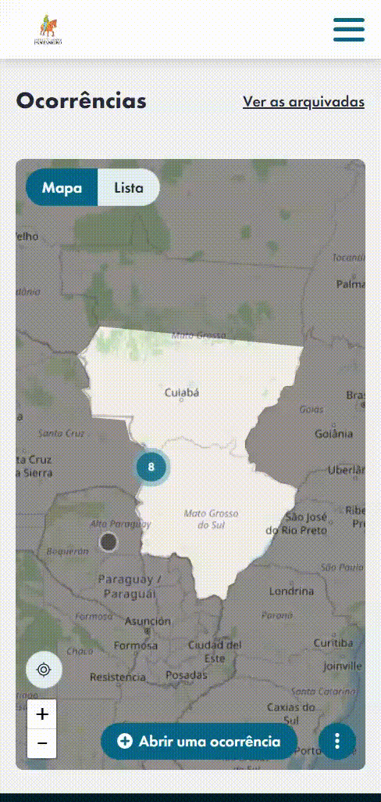

Tutorial Bluspark!
Visualização de ocorrências (MAPA)
Visualize ocorrências diretamente no mapa. Clique em "Veja o detalhe das ocorrências" para obter informações adicionais.
Visualização de ocorrências (LISTA)
Veja todas as ocorrências em uma lista prática. Uma visão geral facilitada.

Abrir uma ocorrência
Para abrir uma ocorrência, siga estes passos:
- Clique em 'abrir ocorrência'.
- Defina a 'Prioridade'.
- Escolha o 'Tipo de local', como 'Geolocalização', para marcar sua posição.
- Selecione a 'Equipe de tratamento' responsável.
- Especifique o 'Tipo da ocorrência'.
- Descreva o problema e adicione uma imagem se desejar (opcional).
Abrir Ocorrencia
É possível também abrir uma ocorrencia selecionando em 'Tipo de local' a opção 'Local' para especificar locais já mapeados como Serra Negra, Acurizal, Novos Dourados, ou até mesmo veículos como barcos, carros e tratores. Esse tipo de abertura pode ser mais simples na maioria dos casos.